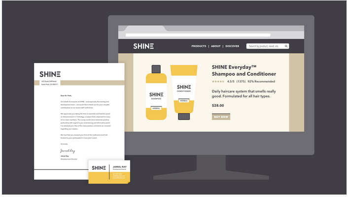

Visual Branding in Graphic Design
Visual branding is an integral aspect of graphic design, influencing brand perception and recognition.
Branding and visual identity are all around us. Look closely, and you'll find them on websites, product packaging, and different types of advertising. Even personal items, like documents and business cards, bear some form of identity.
Simply put, branding is what other people think—about you, your company, your product, or your service. Visual identity is what that brand looks like, from your logo to your color choices and so much more.

Strong visuals can be very persuasive. Think of your own experiences as a consumer. Have you ever chosen a product simply because you liked the way it looked? Understanding visual identity can help you make more thoughtful design decisions, regardless of your role, medium, or skill level.
A closer look at visual identity
Visual identity is kind of like a preview of your brand. Each part of your design is a clue that tells the viewer what they can expect. Your aesthetic can be traditional, modern, or a little more out there—every brand is different. No matter what, all of your design elements work together to show exactly what your brand is about.

Of course, it's not all business. You can apply the concept of identity to almost any type of project, including personal designs. Whether you're updating your resume or looking for ways to enhance your blog, there are many benefits to having a consistent visual style.
Home